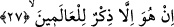
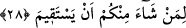

ayrılan kimseye birisinin “nereye gidiyorsun?” demesine benzeyen bir ifâdedir. Burada
kâfirler; istikametten ayrılarak gidilmesi gereken yoldan başka bir yol tutan kimsenin
durumuna benzetilmiştir. Bilindiği üzere doğru istikametten ayrılan kimseye, yanlış
yolda olduğunun vurgulanması ve doğru istikametten ayrılmasının kınanması için
“nereye gidiyorsun?” denilir. Dolayısıyla Kur’an hakkında ona yakışmayan şeyler
söyleyen kimseye, âyetin ifâdesiyle “nereye gidiyorsunuz” diye hitap olunmuştur. Buna
göre âyette şöyle denmiş olmaktadır: Siz ey insanlar! Hakikati ortaya çıkan, doğru
istikameti besbelli olan bu yoldan daha güvenli hangi yol var ki o yola giriyorsunuz?
Ebu’l-Baka’ya göre “eyne” kelimesi “ilâ eyne” şeklindedir. Buna göre kelimenin
başındaki harf-i cerr hazfedilmiştir. Ancak “harf-i cerr hazfedilmiştir” şeklinde
açıklama yapmaya gitmesek bu da câizdir. Bu takdirde “âyetin başında ilâ harf-i cerri
gizlidir” demeyiz ve “burada tazmin vardır” deriz. Tazmin ihtimaline göre âyette sanki
şöyle denmiş oluyor: “Siz nereye gitmeyi kasdediyorsunuz?”
Cüneyd (k.s.) ise bu âyeti şöyle anlıyor: Siz bizi bırakıp da nereye gidiyorsunuz?
Oysa “Herşeyin hazineleri yalnız bizim yanımızdadır.” (Hicr 15/21)
et-Te’vilâtü’n-Necmiyye’de ise okuduğumuz bu âyet şöyle açıklanıyor: Siz hak yolu
bırakıp da bâtıl yola mı gidiyorsunuz ve ruhun peşine takılmayı bırakıp da nefislere
uymayı mı tercih ediyorsunuz?
27. O, herkes için bir öğüttür.
Ey îman ve itâatla mükellef olan insanlar! “O” Kur’an “alemlere, içinizden doğru
yola girmek isteyene bir öğüttür.” Âyetin başındaki “in” kelimesi olumsuzluk ifâde
eder. Âyette yer alan “zikrun” kelimesi, onlara hatırlatma ve öğüt demektir. Buradaki
“el-alemîn” kelimesinden maksad, insanlar ve cinlerdir. Maksadın bu olduğunu akıl
vâsıtasıyla biliyoruz. Çünkü vaaz ve hatırlatmaya muhtaç olan onlardır.
28. Sizden doğru yolda gitmek isteyenler için de (bir öğüttür).
Bu âyette “doğru yola girmek isteyen” ifâdesi, ondan önce geçen “el-alemîn”
kelimesinden bedeldir. Bu kelimenin bedel oluşunu “alemîn” kelimesinin başındaki
harfi cerin tekrar edilmiş olmasından anlıyoruz. Buradaki bedel, bedelu’l-ba’z mine’l-
küll’dür. İnsan ve cin topluluğu küll, doğru yola girmek isteyenler ise bunların bir
kısmıdır. Burada “alemîn” kelimesiyle “doğru yola girmek isteyen kimse” arasında
herhangi bir çelişme yoktur. Çünkü insan ve cin topluluğuna “alemîn” denirken onların